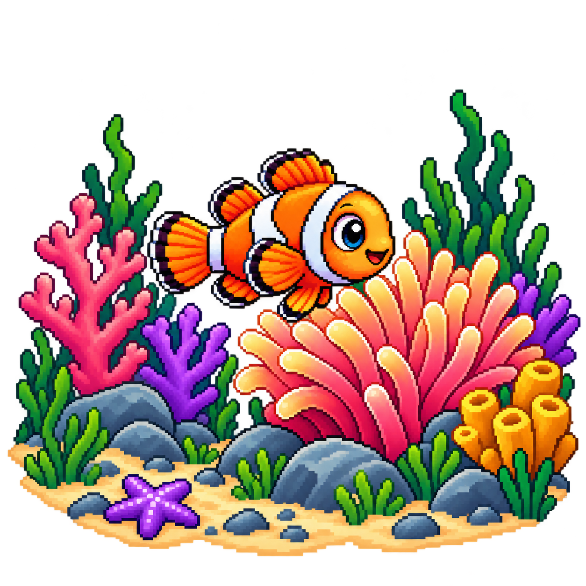
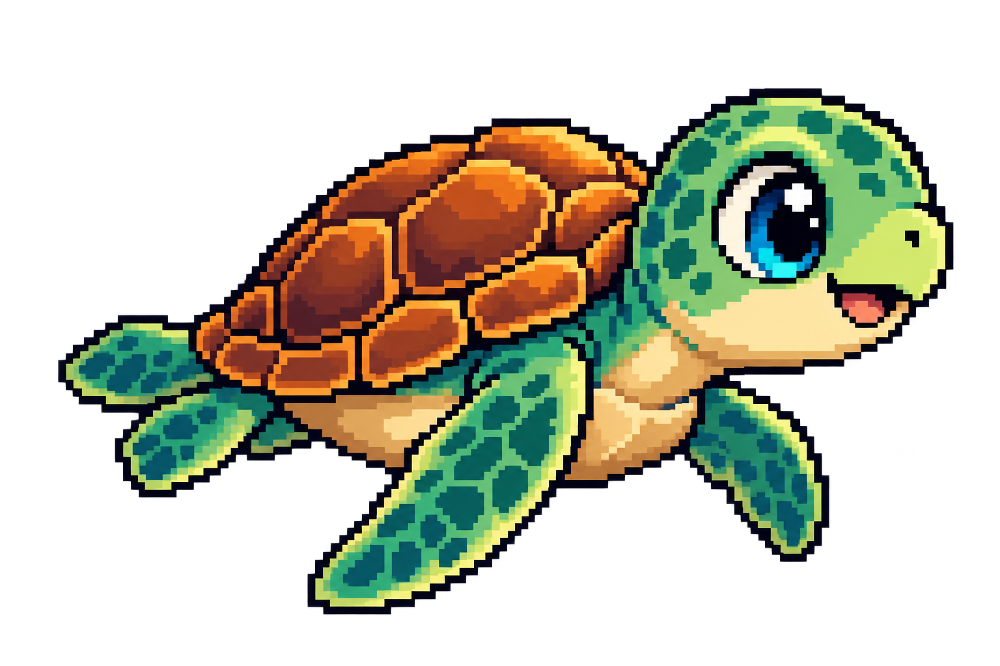

Explore o oceano, descubra novas espécies e desvende seus segredos.
Missão 1 — Descubra o peixe-palhaço: explore o oceano com as setas e aproxime a Merlin do recife de corais.


Nome científico: Amphiprion ocellaris
🐠 Curiosidade: o peixe-palhaço vive entre os tentáculos de anêmonas-do-mar. Ele recebe proteção, enquanto ajuda a anêmona, por exemplo, afastando alguns predadores.
Espécies descobertas: 0/1
Nossa primeira aventura está começando...